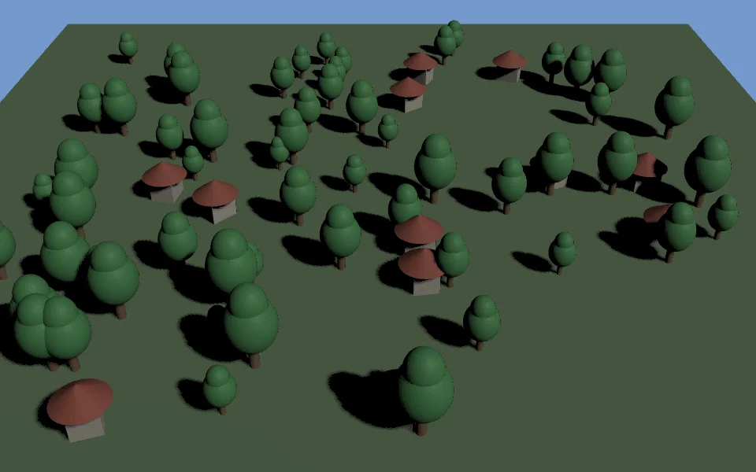

In Blender you build a Tree once, put it in a collection and instance it. Until now the X3D exporter wrote those instance Empties as bare Transforms and dropped the content. It now writes each instanced collection once as a Group DEF and every further placement as Group USE. The grove below is 60 trees and 12 huts: 72 placements.
grove-A in X_ITE 16.7.1 (bundled with the ROUTE demo, ../../blender-route/v1/vendor/x_ite). Drag to orbit.

X3D 4.0 · X_ITE 16.7.1| File | What it is | Bytes | gzip -9 | Shape | Transform | IndexedFaceSet | DEF / USE |
|---|---|---|---|---|---|---|---|
| grove-main-before | origin/main exporter, collection instances | 14,877 | 3,773 | 1 | 75 | 1 | 80 / 0 |
| grove-A | collection instances, this PR | 134,377 | 33,127 | 6 | 80 | 6 | 100 / 71 |
| grove-B | realised copies, shared mesh data | 180,036 | 36,138 | 205 | 207 | 205 | 225 / 399 |
| grove-C | realised copies, single-user meshes (no sharing) | 6,755,470 | 1,701,044 | 205 | 207 | 205 | 424 / 200 |
Bytes: Python os.path.getsize / len of the file; gzip: Python 3.13 gzip.compress level 9; node counts: byte counts of "<Shape", "<Transform", " DEF=", " USE=" in the file. tools/instancing_demo.py in x3d-blender-io builds all four and writes receipts/sizes.json.
Left, what main wrote for the instanced scene; right, grove-A. grove-B and grove-C draw the same pixels as each other (max difference 0 of 255) and, against grove-A, a mean absolute difference of 0.0004/255 with 12 of 576,000 pixels differing by more than 8 (max 32): float rounding at edges. X_ITE 16.7.1, Chromium 157.0.8103.78, SwiftShader, 960×600; numpy abs difference on RGB.
<Transform DEF="OB_Tree_00" translation="…" rotation="…" scale="…">
<Group DEF="CO_Tree"> <!-- first placement: the content, once -->
<Transform DEF="OB_Tree_TreeTrunk" …><Shape>…</Shape></Transform>
<Transform DEF="OB_Tree_TreeCrownLow" …>…</Transform>
</Group>
</Transform>
<Transform DEF="OB_Tree_01" …><Group USE="CO_Tree" /></Transform> <!-- every other placement -->
Members are written in the collection's own frame with its instance_offset at the origin; the placing Empty's Transform carries position, rotation and scale. The collection's objects are placed from their own transform channels, not matrix_world (below).
origin/main (044bea3) wrote 72 empty Transforms and no geometry for this scene: 1 Shape, 14,877 bytes. A file that validates and loads but lacks the scene.
matrix_world is stale for an asset library ConfirmedObjects that live only in a collection kept out of the scene never get their world matrix refreshed. In a first run the realised copies (built from matrix_world) came out flat on the ground while the exporter happened to be right; the exporter now places members from matrix_basis and parent inverses so it does not depend on that.
Linked duplicates already shared mesh data through DEF/USE (B is 37× smaller than C). The new part is the Group: 25.4% over B uncompressed and only 8.3% after gzip, because repeated Transform lines compress well. It matters more for the node count a browser must build: 6 Shapes against 205.
| Not run | Why it matters |
|---|---|
| Nested collection instances, and instanced objects that are animated, skinned, lights or cameras | Only mesh-like members are written (curves, surfaces, text included); other member types are skipped without a message |
| Per-instance overrides (Geometry Nodes instances, material overrides on the Empty) | All placements share one look by construction |
| Load time and frame rate | Software GL; no performance claim is made, only bytes and node counts |
| Browsers other than X_ITE 16.7.1; the Blender 4.5/5.1 CI legs | As on the ROUTE page |
| Round trip of the Group back into Blender collection instances | Not run: what the importer makes of a Group USE; no collection is rebuilt on import by design of this change |